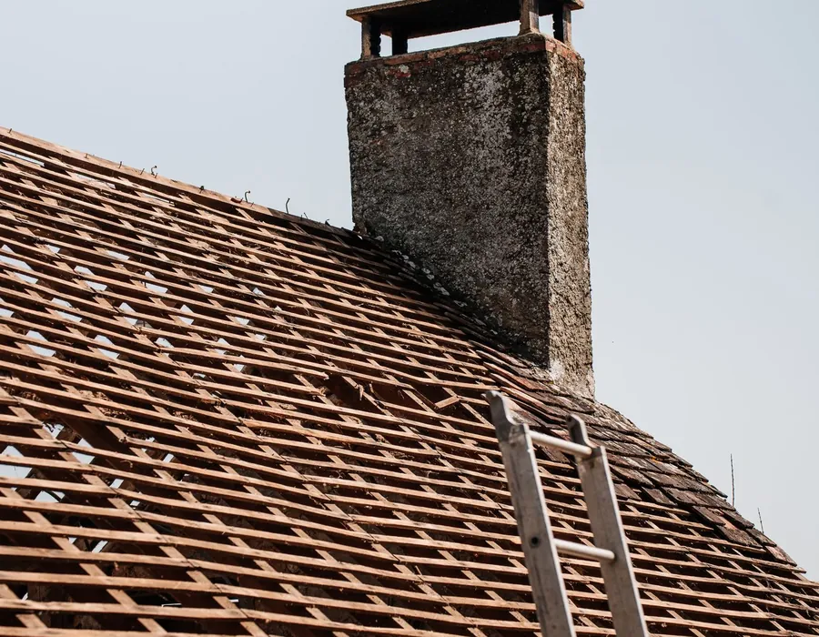
Înlocuirea acoperișului vechi
Scoatem ardezia, schimbăm căpriorii putrezi, membrană și învelitoare nouă. Casa e acoperită în fiecare seară.
la cheie de la 750 lei/m²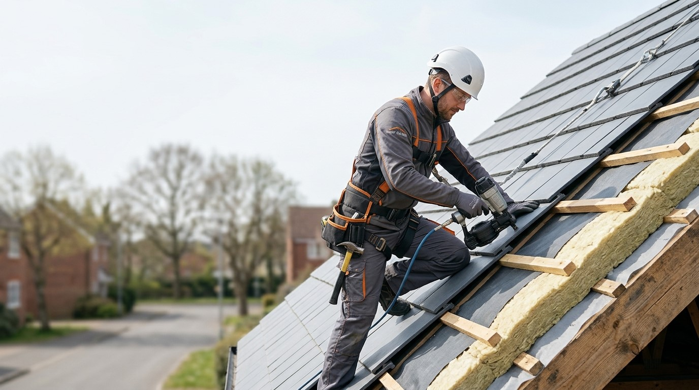
Echipă de acoperișuri · toată Moldova
La cheie: demontare, căpriori, termoizolare, învelitoare, jgheaburi. Prețul se fixează în contract — și nu crește pe parcursul lucrărilor.
răspundem în 15 minute
Calcul rapid
Învelitoare, membrană, șipci și coamă cu manopera. Demontarea, căpriorii și jgheaburile — în calculul detaliat.
Ce facem
De la înlocuirea ardeziei vechi până la o singură infiltrație lângă coș. Echipă proprie, fără intermediari, în toată Moldova.
Calculează-ți acoperișul
Scoatem ardezia, schimbăm căpriorii putrezi, membrană și învelitoare nouă. Casa e acoperită în fiecare seară.
la cheie de la 750 lei/m²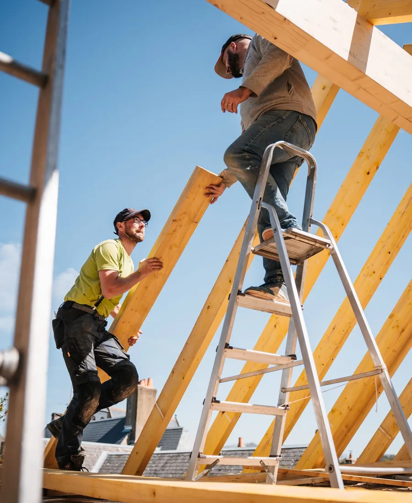
Căpriori după proiect sau la fața locului.
de la 950 lei/m²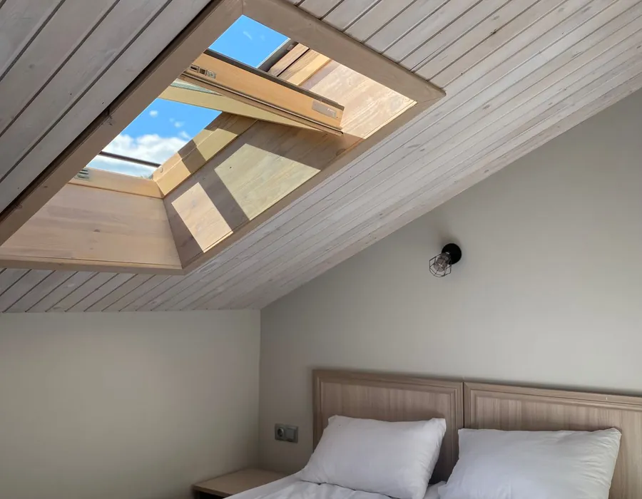
Podul devine etaj locuibil.
după proiect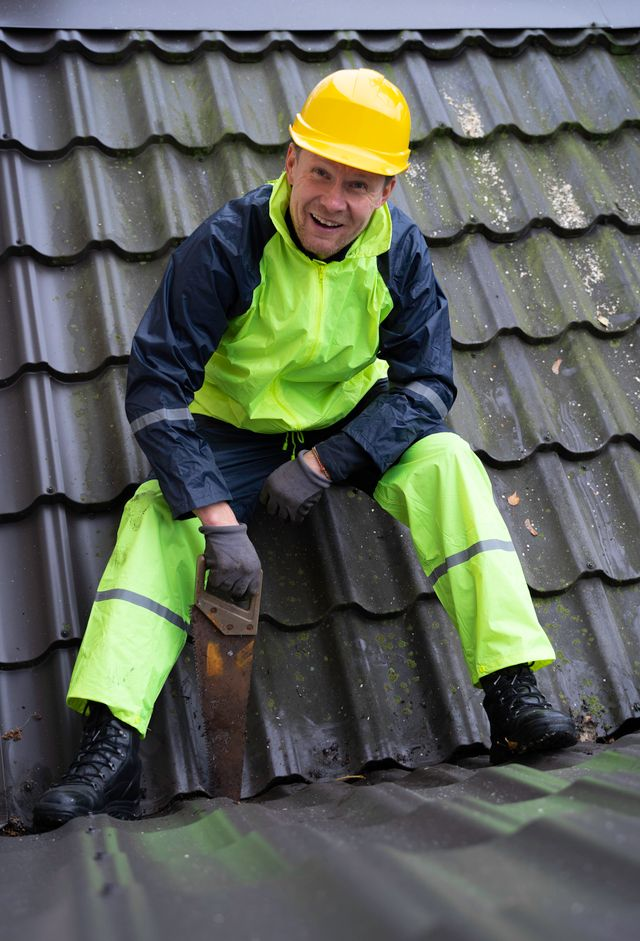
Venim în ziua apelului.
de la 1 500 lei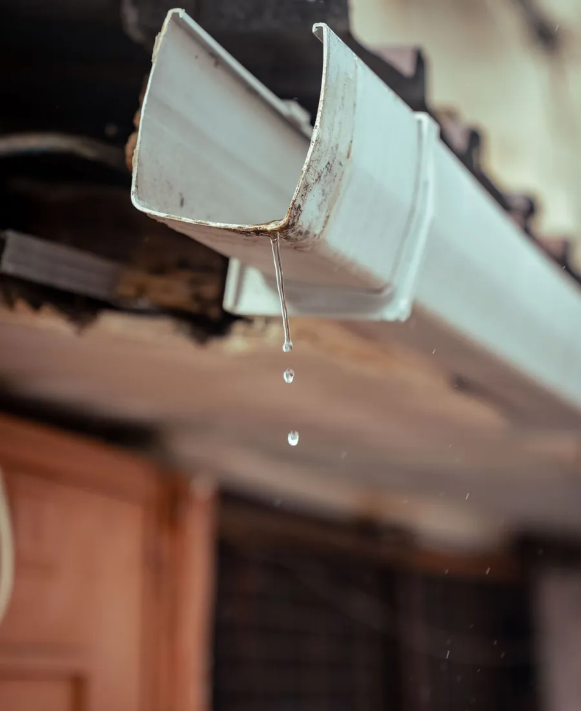
Jgheaburi, sofite, parazăpezi.
de la 320 lei / m.l.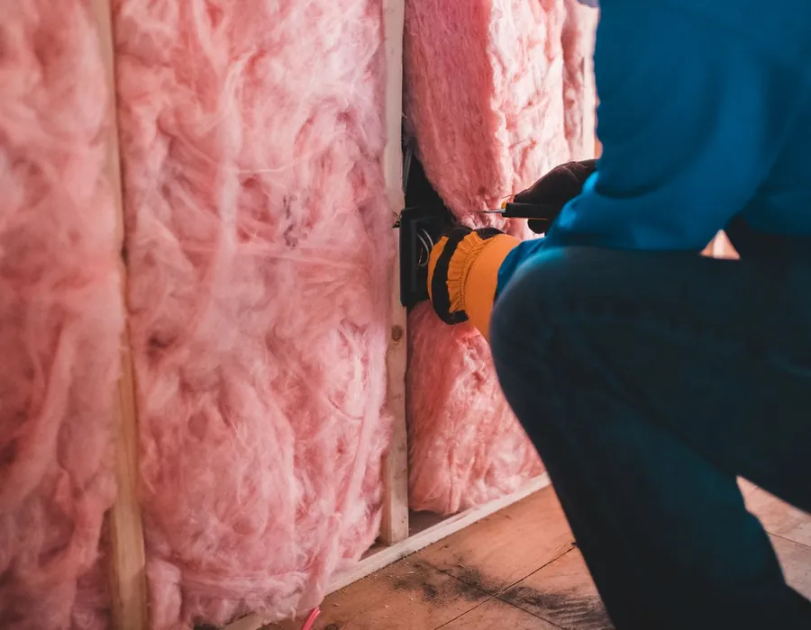
Vată minerală 150–200 mm.
de la 220 lei/m²Prețuri
Preț pe m² de acoperiș. „La cheie” — cu material, membrană, șipci, coamă și manoperă. Puteți veni cu materialul dvs. — atunci calculăm doar manopera.
Prețuri orientative, octombrie 2026. Suma exactă o spunem după măsurare și o fixăm în contract.
Calculator
Materialele și manopera se calculează separat — vedeți pentru ce plătiți. Calculul ni-l puteți trimite imediat pe WhatsApp sau Viber.
01Forma acoperișului
02Dimensiunea casei și panta
03Învelitoare
04Ce e acum pe acoperiș
05Suplimentar
Ce include „la cheie”
Opt straturi, și fiecare rezolvă o problemă. Toate sunt incluse în preț. Dacă un strat nu e necesar — scriem asta în deviz.
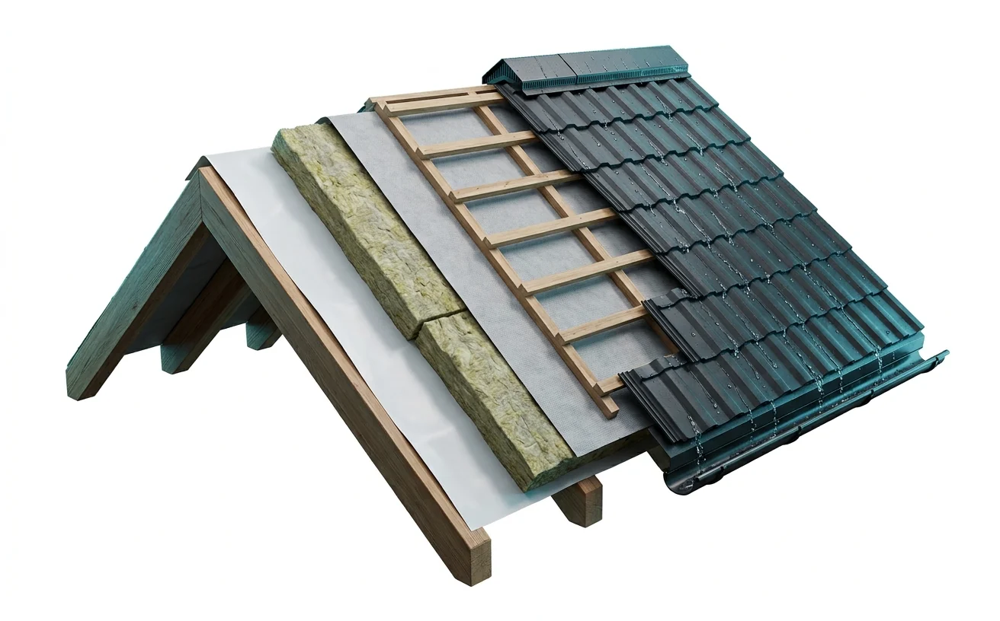
De la căpriori la coamă
Schimbăm cei putrezi, tratăm cu antiseptic
Aburul din casă nu udă termoizolantul
Vată minerală 150–200 mm
Fără ea, la vecini curge după 3 ani
Spațiu de 4–5 cm, fără condens
Scândură uscată sau OSB
Dolii, racorduri, elemente de ventilare
Jgheaburi, sofite, parazăpezi
Lucrări
Trageți cursorul pe poză. La fiecare lucrare — ce am făcut, câte zile și cât a costat.
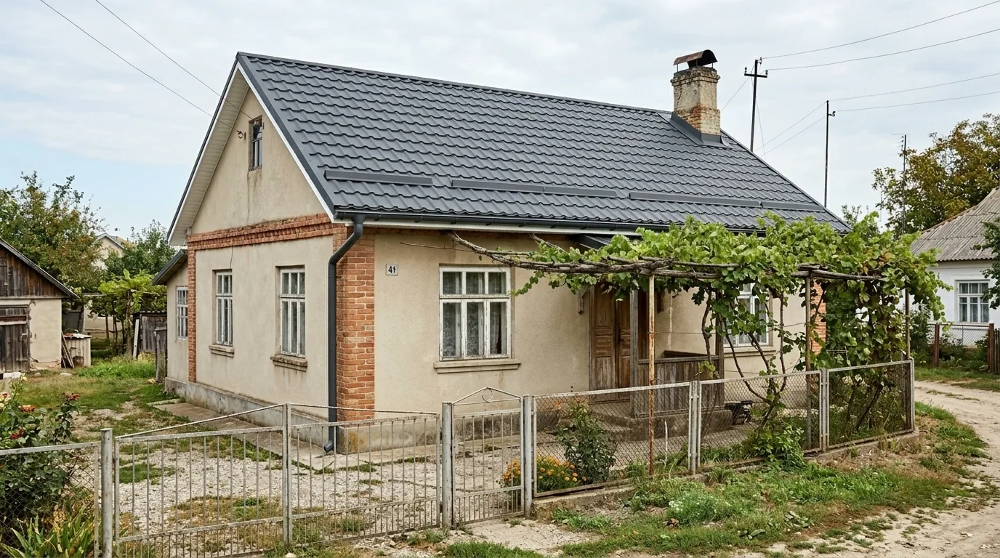
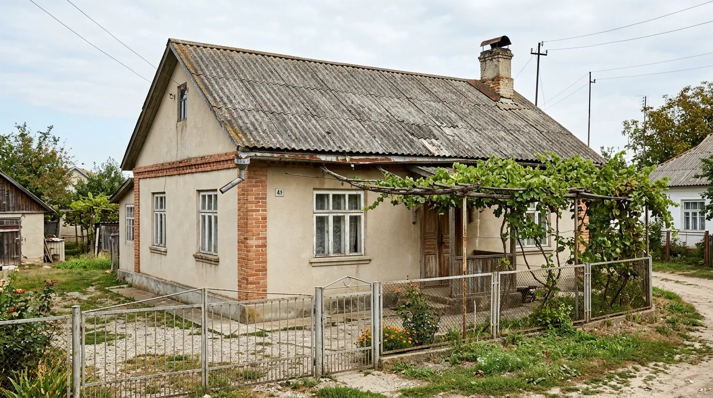
ÎnainteDupăObiect
118 000 lei
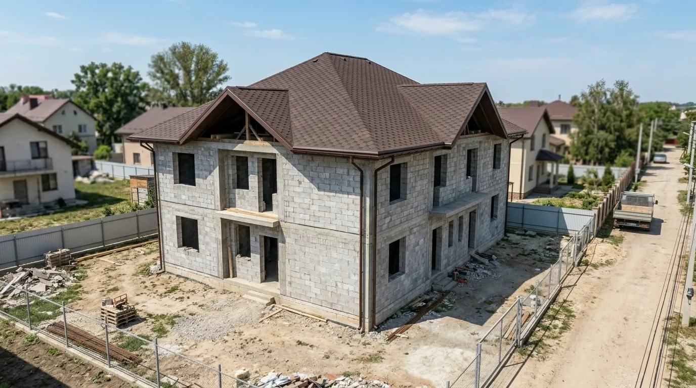
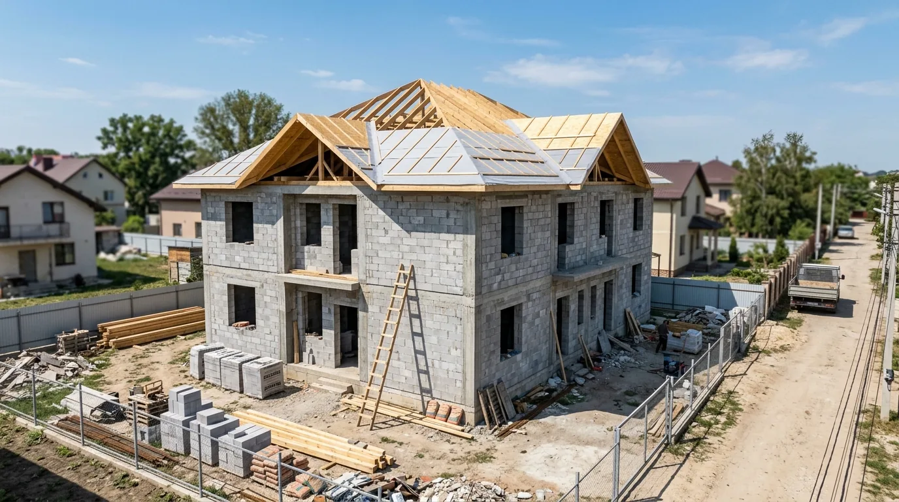
ÎnainteDupăStrășeni · 210 m² · 9 zile
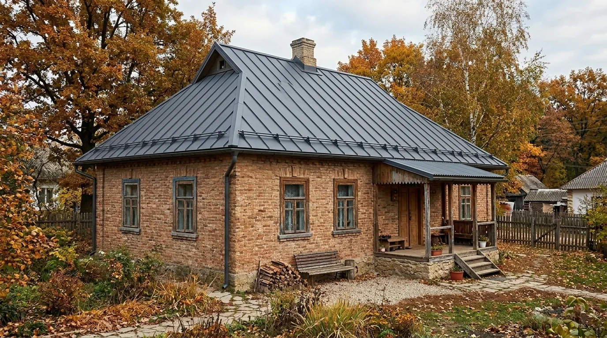
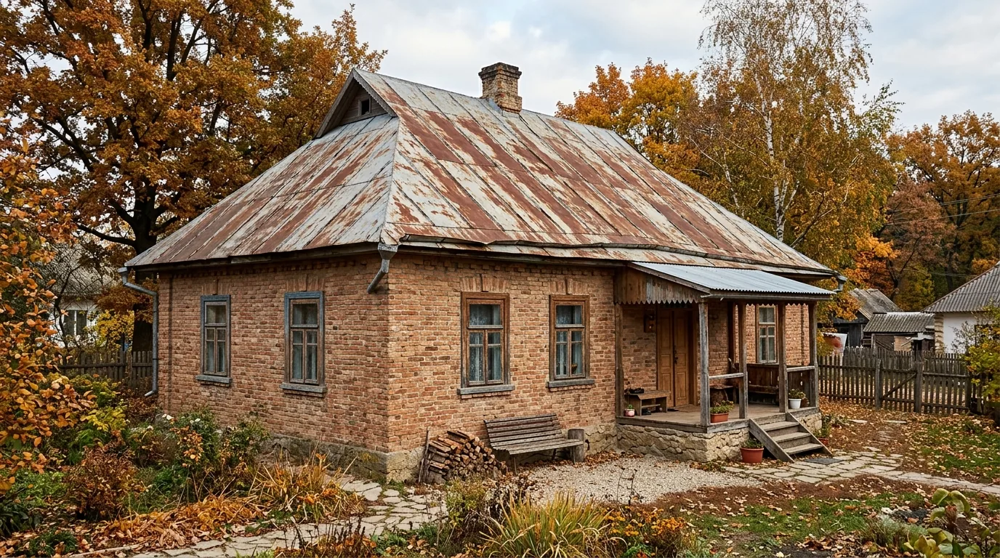
ÎnainteDupăDurlești · 140 m² · 7 zile
Exemplu — înlocuiți cu pozele și devizele dvs.
Dacă sunteți peste hotare
Jumătate din acoperișurile noastre sunt plătite de copii și nepoți din Italia, Germania, Anglia. De aceea totul e organizat ca să urmăriți lucrarea din orice țară.
Trimitem PDF, se poate semna la distanță.
Într-un chat comun cu dvs. și părinții.
Vă arătăm membrana, căpriorii, orice nod.
Materiale → căpriori → învelitoare → recepție.
Aducem materialele, scoatem gunoiul și ardezia.
Cum decurge lucrarea
Trimiteți poza casei și dimensiunile — vă spunem intervalul de preț în aceeași zi.
În aceeași zi sau a doua zi. În Chișinău și suburbii — fără plată suplimentară.
Fiecare poziție pe rând separat. Prețul se fixează.
Le aducem cu reducerea echipei sau lucrăm cu ale dvs.
Desfacem doar cât reușim să acoperim într-o zi. Dacă plouă — prelată.
Căpriori, membrană, învelitoare, coamă, racorduri, jgheaburi.
Adunăm șuruburile cu magnetul, scoatem gunoiul și ardezia.
Plata ultimei etape și certificat de garanție pe 10 ani.
Reparații
De cele mai multe ori nu trebuie schimbat tot acoperișul. După semne se vede de obicei unde e problema și cât costă reparația.
Trimiteți poze cu infiltrația din exterior și din interior — vă spunem ce s-a întâmplat și cât costă.
Trimite pozeDe ce curg acoperișurile după 2 ani
Așa nu se face
Cum facem noi
Prin contract. La material — garanția producătorului 15–50 ani.
Deviz pe poziții. Dacă găsim ceva la demontare — mai întâi convenim cu dvs.
Numerar, transfer, factură pentru firme. Fără avans 100%.
Nu revindem comenzile. Dacă e departe — locuim la obiect.
Unde lucrăm
Chișinău și suburbii — măsurare fără plată suplimentară. În raioane venim prin înțelegere; dacă e departe — echipa locuiește la obiect și nu plătiți drumul în fiecare zi.
Întrebări
Nici una. Desfacem acoperișul pe porțiuni — exact cât reușim să acoperim cu membrană sau învelitoare într-o zi. Dacă se anunță ploaie, acoperim cu prelată.
Da, tabla și țigla metalică se montează pe orice vreme, în afară de vânt puternic și polei. Șindrila bituminoasă o punem de la +5 °C. Iarna e mai ușor să vă programați și materialele sunt mai ieftine.
Fără termoizolare — da, se aude. Cu termoizolant de 150–200 mm și mansardă ploaia aproape nu se aude. Dacă liniștea e importantă, vă recomandăm șindrila bituminoasă.
Ardezia veche conține azbest, nu se sparge și nu se arde. O scoatem în foi întregi, o stivuim și o ducem la poligon. Este un rând separat în deviz.
Tehnic se poate, dar nu vă sfătuim: sub ardezie nu se văd căpriorii putrezi, acoperișul devine mai greu, iar fără spațiu de ventilare apare condens. Demontarea costă cam 60 lei pe m² — 5–7% din prețul acoperișului.
Pentru înlocuirea învelitorii fără a schimba forma acoperișului, de obicei nu e nevoie de autorizație. Dacă schimbați forma, înălțimea sau faceți mansardă — vă spunem la cine să vă adresați la primărie.
Da. În calculator bifați „materialul e al meu” — calculăm doar manopera. Înainte de montaj verificăm grosimea tablei și setul de accesorii.
Infiltrațiile din vina noastră, desprinderea foilor și jgheaburilor, defectele racordurilor — 10 ani prin contract. Venim și reparăm gratuit. Garanția pentru material o dă producătorul.
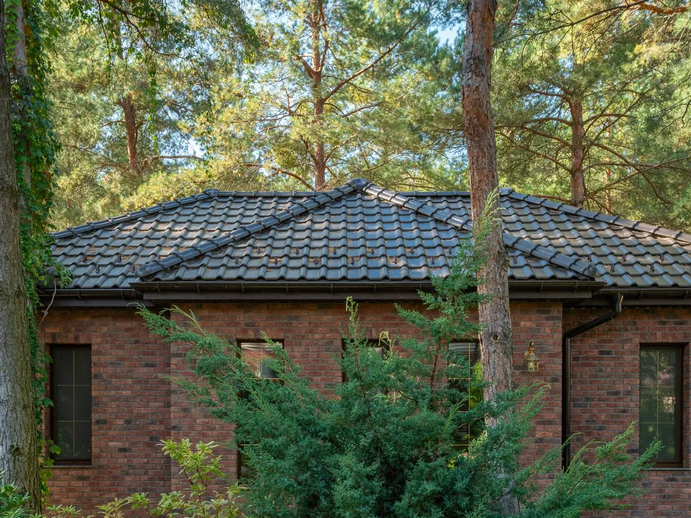
Calculăm într-o zi
Lungimea și lățimea casei, ce e acum pe acoperiș și ce învelitoare doriți. Răspundem pe WhatsApp sau Viber.